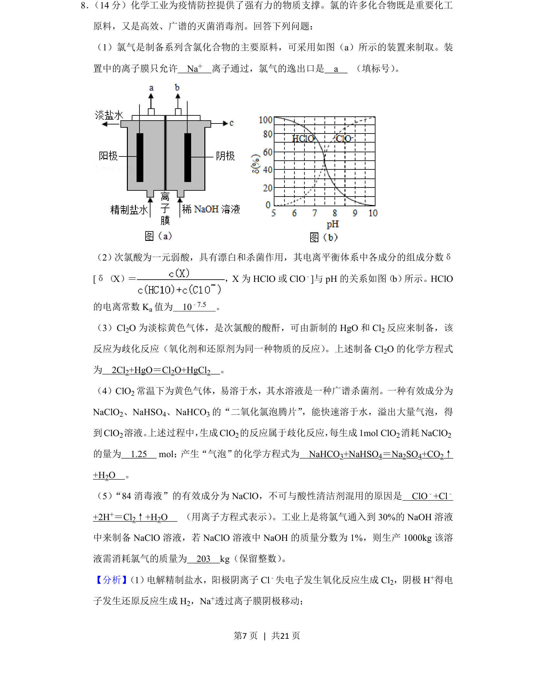
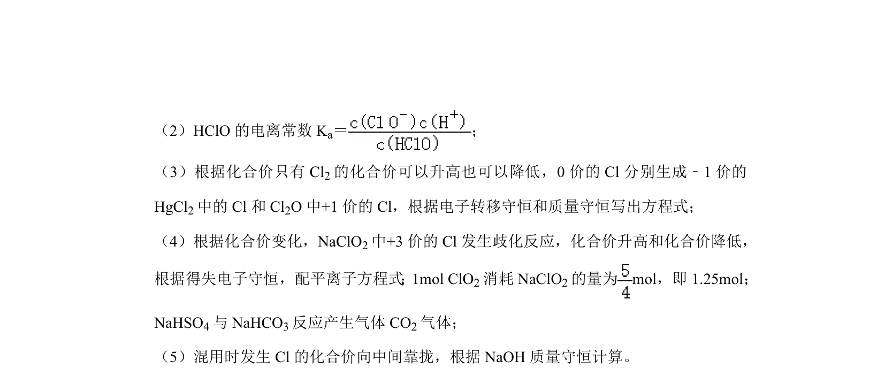
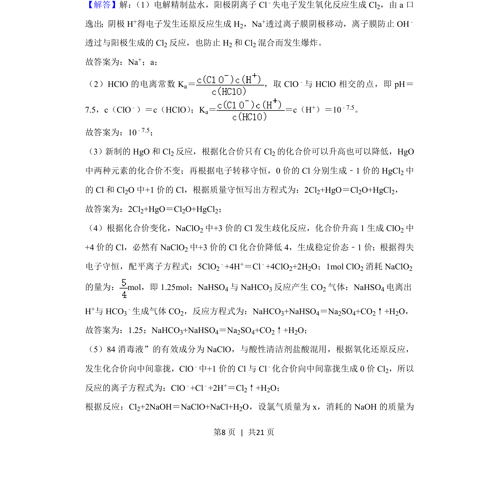
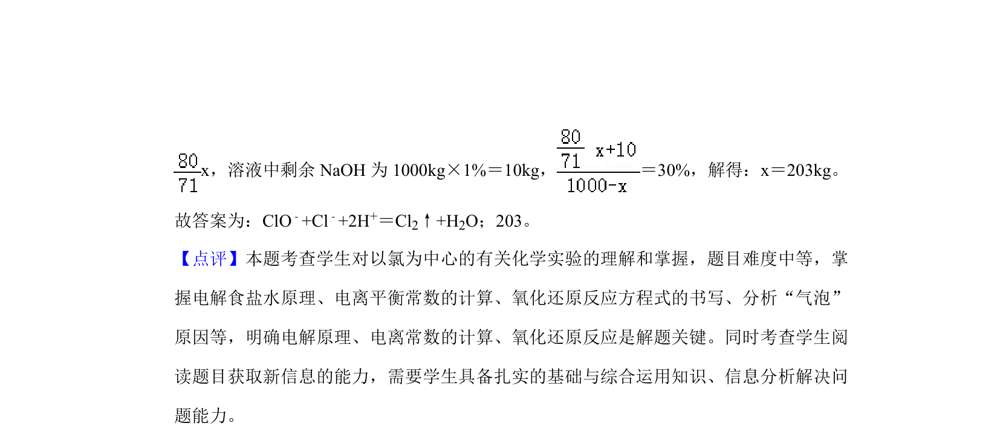

考点：电解 电离常数 歧化反应 化学计算


本题以氯的化合物为背景，考查电解原理、电离常数、歧化反应及化学计算。


📄 原 PDF 第 7 页：
素材/真题/吉林/2008-2024·（吉林）化学高考真题/2020年高考化学试卷（新课标Ⅱ）（解析卷）.pdf
8． （14分）化学工业为疫情防控提供了强有力的物质支撑。氯的许多化合物既是重要化工 原料，又是高效、广谱的灭菌消毒剂。回答下列问题： （1）氯气是制备系列含氯化合物的主要原料，可采用如图（a）所示的装置来制取。装 置中的离子膜只允许 Na+ 离子通过，氯气的逸出口是 a （填标号） 。 （2） 次氯酸为一元弱酸，具有漂白和杀菌作用，其电离平衡体系中各成分的组成分数δ [δ（X）＝ ，X为HClO或ClO ﹣]与pH的关系如图（b） 所示。HClO 的电离常数K a值为 10﹣7.5 。 （3）Cl2O为淡棕黄色气体，是次氯酸的酸酐，可由新制的HgO和Cl 2反应来制备，该 反应为歧化反应（氧化剂和还原剂为同一种物质的反应） 。上述制备Cl2O的化学方程式 为 2Cl2+HgO＝Cl2O+HgCl2 。 （4）ClO2常温下为黄色气体，易溶于水，其水溶液是一种广谱杀菌剂。一种有效成分为 NaClO2、NaHSO4、NaHCO3的“二氧化氯泡腾片”，能快速溶于水，溢出大量气泡，得 到ClO 2溶液。 上述过程中， 生成ClO2的反应属于歧化反应， 每生成1mol ClO2消耗NaClO 2 的量为 1.25 mol； 产生“气泡”的化学方程式为 NaHCO3+NaHSO4＝Na2SO4+CO2↑ +H2O 。 （5）“84消毒液”的有效成分为NaClO，不可与酸性清洁剂混用的原因是 ClO ﹣+Cl﹣ +2H+＝Cl2↑+H2O （用离子方程式表示） 。工业上是将氯气通入到30%的NaOH溶液 中来制备NaClO溶液，若NaClO溶液中NaOH的质量分数为1%，则生产1000kg该溶 液需消耗氯气的质量为 203 kg（保留整数） 。
【分析】 （1） 电解精制盐水，阳极阴离子Cl﹣失电子发生氧化反应生成Cl 2，阴极H +得电 子发生还原反应生成H 2，Na+透过离子膜阴极移动；